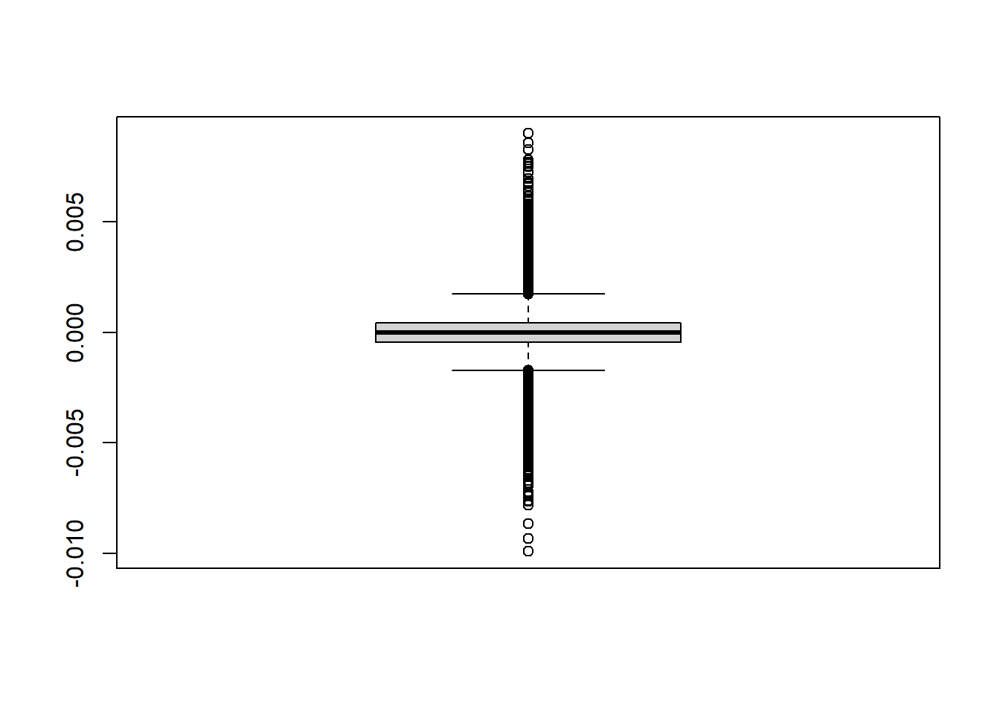
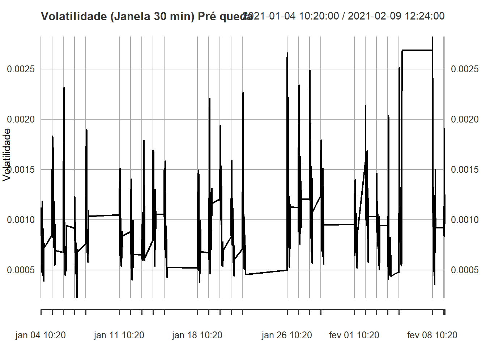
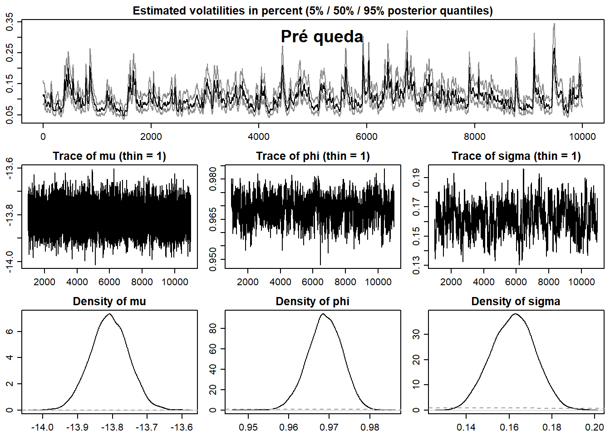

os <- Sys.info()["sysname"]
if(os == "Windows") {
dt.intra <- read.csv("D:/Code/R_studio/Petr4_ana/dt_1min_PETR4_2021_metatrader.csv",
header = TRUE, stringsAsFactors = FALSE,
sep = ";", dec = ",")
} else if(os == "Linux") {
dt.intra <- read.csv("~/Documentos/Coding/Statistics_in_R/Petr4_ana/dt_1min_PETR4_2021_metatrader.csv",
header = TRUE, stringsAsFactors = FALSE,
sep = ";", dec = ",")
}
dt1 <- as_tibble(dt.intra) %>%
mutate(Period = ymd_hms(X)) %>%
select(-X) %>%
filter(!(hour(Period) == 10 & minute(Period) < 20)) %>%
filter(hour(Period) < 17) %>%
filter(!(hour(Period) == 16 & minute(Period) > 54)) %>%
filter(!(date(Period) == "2021-02-17")) %>%
arrange(Period)
ret.1min <- as.xts(dt1$Ret.1min, order.by = dt1$Period)Análise de Volatilidade Estocástica e Retornos Intradiários - PETR4
Introdução
Este relatório explora o comportamento da volatilidade e dos retornos da ação PETR4 ao longo de 2021, com dados de frequência de 1 minuto extraídos da plataforma MetaTrader. Utilizamos modelos de volatilidade estocástica via stochvol, comparações com volatilidade realizada, e examinamos propriedades de clustering de volatilidade.
Leitura e Pré-processamento dos Dados
- Remoção de janelas de abertura com menor liquidez (10:00 até 10:20) e dos últimos minutos de pregão (após 16:55).
- Exclusão do feriado em 17/02/2021.
- Conversão para série temporal (
xts) e remoção de outliers extremos substituindo-os pela observação anterior.
Observação inicial
plot(ret.1min, main="PETR4 Retornos 1min", col="black")boxplot(as.double(ret.1min), main="Boxplot dos Retornos 1min")
Identificação e remoçãode Outliers
Observamos os Outliers presentes nos valores maximos e minimos dos retornos. Com isso os removemos observamos novamente os gráficos de boxplot e a série temporal.
warning=FALSE
message=FALSE
# Teste ADF e visualizações iniciais
par(mfrow=c(1,1))
# Identificar outliers
idx_min <- which.min(as.double(ret.1min))
idx_max <- which.max(as.double(ret.1min))
# Substituir outliers pela observação anterior
ret.1min[idx_min] <- ret.1min[idx_min - 1]
ret.1min[idx_max] <- ret.1min[idx_max - 1]
plot.ts(ret.1min)boxplot(as.double(ret.1min))
Testes de Estacionariedade
tseries::adf.test(ret.1min)Warning in tseries::adf.test(ret.1min): p-value smaller than printed p-value
Augmented Dickey-Fuller Test
data: ret.1min
Dickey-Fuller = -34.447, Lag order = 35, p-value = 0.01
alternative hypothesis: stationaryResultado mostra que os retornos são estacionários, o que é esperado para séries de retornos.
Ajuste do Modelo de Volatilidade Estocástica
Ajustamos um modelo svsample() a dois blocos temporais:
- Primeiros 10000 pontos antes do maior retorno absoluto negativo.
- 10000 pontos após o maior retorno (queda abrupta) para comparar regimes.
echo=FALSE
warning=FALSE
message=FALSE
set.seed(123)
ret_vec <- as.numeric(ret.1min[1:10000])
sv_fit <- svsample(ret_vec, draws = 5000, burnin = 1000)Argument 'y' (data vector) contains values very close to zero. I am applying an offset constant of size 1.08288402703973e-07 to do the auxiliary mixture sampling. If you want to avoid this, you might consider de-meaning the returns before calling this function.Done!Summarizing posterior draws...max = idx_max+10000
ret_vec2 <- as.numeric(ret.1min[idx_max:max])
sv_fit2 <- svsample(ret_vec, draws = 5000, burnin = 1000)Argument 'y' (data vector) contains values very close to zero. I am applying an offset constant of size 1.08288402703973e-07 to do the auxiliary mixture sampling. If you want to avoid this, you might consider de-meaning the returns before calling this function.Done!Summarizing posterior draws...plot(sv_fit, showobs = FALSE)
title(main = "Pré queda")
plot(sv_fit2, showobs = FALSE)
title(main = "Pós queda")Analisando os dados pós e pré queda da bolsa podemos ver uma mudança principalmente nas distribuições normais de Mu, Phi e Sigma, onde podemos definir o que cada variavel nos diz como:
Interpretação de μ (mu)
Média de longo prazo
μ define o valor médio ao qual Log-volatilidade reverte em longo prazo.
Processos com μ maior indicam que, em média, a volatilidade tende a ficar mais elevada.
“Drift” da volatilidade latente
Atua como termo constante que “puxa” o nível de volatilidade de volta ao seu ponto de equilíbrio
Ao estimar o modelo, a média pontual de μ na distribuição posterior corresponde à média aritmética.
Interpretação de φ (phi)
Persistência (autoregressão)
φ atua como coeficiente AR(1) medindo a “memória” da volatilidade.
Se φ≈1, choques em ht−1 têm efeito duradouro, resultando em clusters de volatilidade.
Estacionaridade
O modelo é estacionário somente se ∣ϕ∣<1; valores absolutos acima quebram a estabilidade do processo latente.
Estimações típicas em mercados emergentes mostram φ entre 0.95 e 0.99, indicando alta persistência.
Interpretação de σ (sigma)
Volatilidade da volatilidade
σ é o desvio-padrão dos choques que afetam o processo de log-volatilidade
Quanto maior σ, mais pronunciadas são as flutuações de curto prazo na volatilidade.
Incerteza dinâmica
Reflete a variabilidade intrínseca na evolução da volatilidade latente, controlando a rapidez das mudanças de regimes.
Modelos com σ elevado tendem a capturar melhor eventos extremos (fat tails) e mudanças bruscas no risco.
O que podemos retirar das nossas observações
Após a grande queda observada em PETR4, estimamos um modelo de volatilidade estocástica usando 10 000 observações subsequentes e constatamos que as distribuições a posteriori de σ (volatilidade da volatilidade) e φ (persistência) tornaram-se menos concentradas em torno dos valores médios pré-queda. Isso evidencia que, no regime pós-choque, há maior incerteza sobre (a) quão rapidamente a volatilidade reverte ao seu nível de equilíbrio e (b) a magnitude dos choques na volatilidade latente.
1. Implicações de φ menos concentrado
Menor certeza sobre a persistência
Um φ com distribuição mais ampla indica que não há confiança clara de que choques passados em (h_t) continuem a influenciar fortemente o nível futuro de volatilidade.Regime de volatilidade transitória
A dispersão elevada sinaliza possível transição entre regimes de volatilidade — desta forma, o “memory effect” do processo se torna imprevisível.Previsões de risco mais amplas
Forecasts de intervalos dinâmicos (e.g. VaR) baseados em φ incerto geram bandas de confiança mais largas, refletindo menor segurança na persistência futura.
2. Implicações de σ menos concentrado
Volatilidade da volatilidade incerta
Uma σ com posterior mais dispersa revela incerteza na magnitude dos choques em (h_t), sugerindo que picos de volatilidade podem ser muito mais extremos ou moderados do que o modelo pré-queda sugeria.Riscos extremos imprevisíveis
Como σ controla a variabilidade dos próprios choques de volatilidade, sua dispersão aumenta a probabilidade de eventos de cauda (tail events) inesperados.Necessidade de hedge robusto
Para mitigar risco, adota-se hedge que contemple cenários de volatilidade superior ao patamar pré-queda, dada a incerteza elevada em σ.
3. Interpretações Combinadas
- Pós-Queda: mais volátil e menos persistente
A conjugação de φ incerto e σ incerto sugere um mercado onde a volatilidade oscila abruptamente com memória curta, indicando potencial benefício de modelos de regime-switching ou de volatilidade local.
Comparação com Volatilidade Realizada
df_vol <- data.frame(volatility = sv_fit[["latent0"]][[1]])
sv_vol_mean <- exp(df_vol / 2)
vol_xts <- xts(sv_vol_mean, order.by = dt1$Period[1:5000])
realized_vol <- rollapply(ret.1min[1:5000]^2, width=30, FUN=function(x) sqrt(252*390*mean(x)), by.column=TRUE, align="right")
realized_vol <- na.omit(realized_vol)par(mfrow=c(2,1))
plot(realized_vol, main="Volatilidade Realizada")
plot(vol_xts, main="Volatilidade Estocástica Estimada")
Insight: Ambas as volatilidades capturam padrões semelhantes, porém a volatilidade estocástica suaviza ruídos de alta frequência, sendo mais adequada para modelagem de risco e precificação.
Cluster de Volatilidade
acf(abs(ret_vec), main="ACF dos Retornos Absolutos")pacf(abs(ret_vec), main="PACF dos Retornos Absolutos")
Insight: Forte autocorrelação nos retornos absolutos indica clusteres de volatilidade, fenômeno típico em séries financeiras.
Teste ARCH LM
ArchTest(ret_vec, lags = 10)
ARCH LM-test; Null hypothesis: no ARCH effects
data: ret_vec
Chi-squared = 862.05, df = 10, p-value < 2.2e-16Resultado: Significativo — indicando presença de heterocedasticidade condicional.
Distribuições Posteriores dos Parâmetros
echo=FALSE
warning=FALSE
message=FALSE
params_mat <- as.matrix(sv_fit$para)
params_df <- as_tibble(params_mat)
params_df <- params_df %>% select(-any_of(c("nu", "rho")))
params_mat2 <- as.matrix(sv_fit2$para)
params_df2 <- as_tibble(params_mat2)
params_df2 <- params_df2 %>% select(-any_of(c("nu", "rho")))
df_long <- pivot_longer(params_df, cols = everything(),
names_to = "param", values_to = "value")
df_long2 <- pivot_longer(params_df2, cols = everything(),
names_to = "param", values_to = "value")ggplot(df_long, aes(x = value)) +
geom_histogram(bins = 50) +
facet_wrap(~param, scales = "free") +
labs(title = "Distribuições dos Parâmetros pré queda",
x = "Valor", y = "Frequência") +
theme_minimal()ggplot(df_long2, aes(x = value)) +
geom_histogram(bins = 50) +
facet_wrap(~param, scales = "free") +
labs(title = "Distribuições dos Parâmetros pós queda",
x = "Valor", y = "Frequência") +
theme_minimal()Interpretação:
mu: Média dos log-retornos.phi: Persistência da volatilidade — valores próximos de 1 indicam alta persistência.sigma: Volatilidade da volatilidade — mostra o quanto a variância latente oscila.
Comparação Antes e Depois da Queda
Parâmetros do modelo após a queda indicam aumento em sigma e possível redução em phi, sugerindo maior instabilidade e menor persistência da volatilidade.
Próximos Passos
- Testar modelos com distribuição
tpara capturar caudas mais pesadas. - Incorporar covariáveis exógenas como volume, notícias ou macrodados.
- Comparar com modelos GARCH para benchmarking.